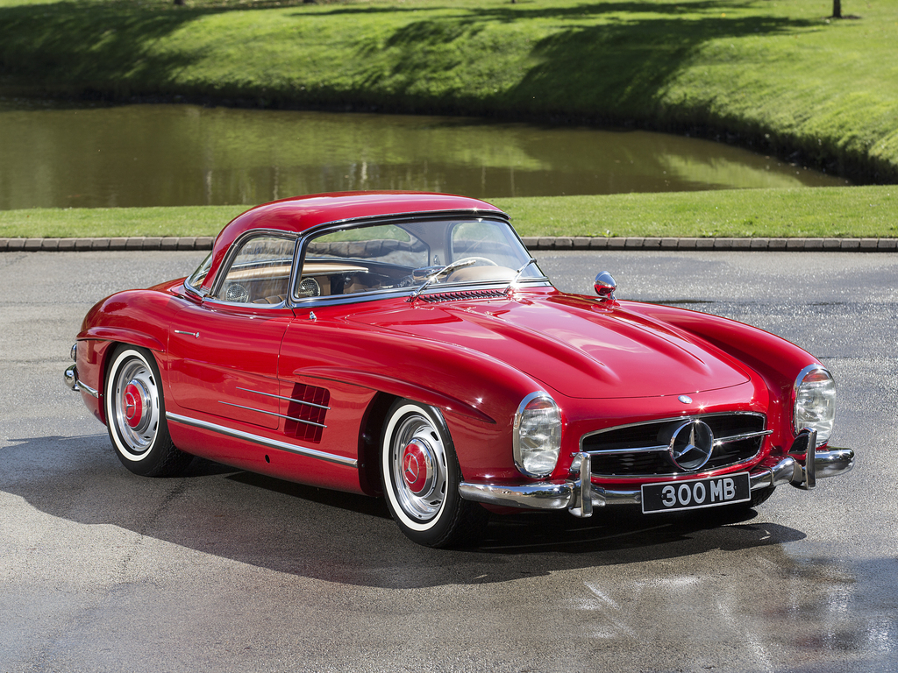
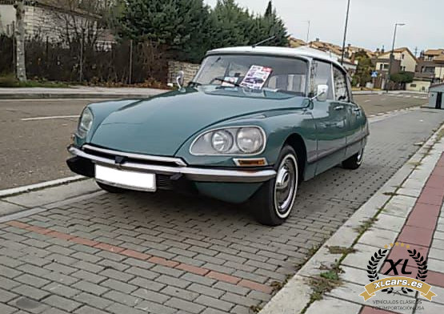
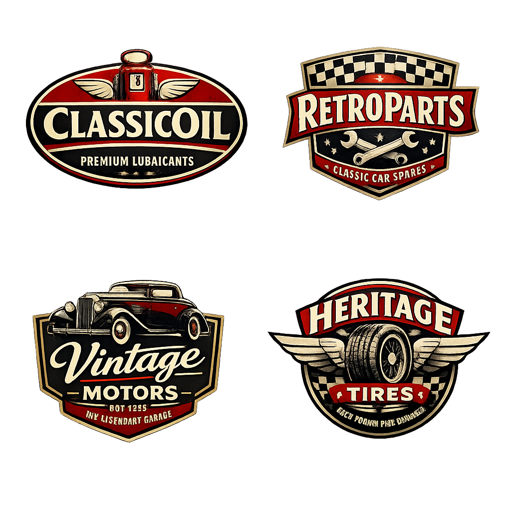

Dates
L’esdeveniment tindrà lloc en el circuit d’Alcarràs a només 15 minuts en cotxe de Lleida. En aquest festival del motor clàssic podrem provar un o varis automòbils d’època de tota mena de models clàssics. Podríem trobar des d’un muscle car com pot ser un Dodge Challenger de 1970 fins a un Corvette C3 Stingray de 1971. O, fins i tot, el mític Mercedes Benz 300 SL de 1960. També podràs trobar models com ara el Ford Fiesta, el Citroën 2 CV o el Seat 1500. Inclús models de col·leccionista com el BMW E30 323i o un Citroën DSpécial. Tots aquests es podran provar en pista amb l’ajuda d’un pilot professional que ens guiarà a través del circuit. També hi haurà una subhasta on es podran adquirir alguns dels vehicles històrics. Per descomptat, hi haurà ponències de professionals del sector automobilístic i un servei de càtering continu per fer una “parada a boxes” quan ens sentim amb gana. Reserva aquestes dates ja que viuràs una experiència única recordant el passat d’alguns dels automòbils clàssics més distintius de la història del motor.
Calendari del Festival
1, 2 i 3 de Maig de 2026
El festival tindrà lloc durant tres dies al Circuit d’Alcarràs.
- Divendres 1 de maig: Obertura i proves lliures
- Dissabte 2 de maig: Exposicions i subhasta
- Diumenge 3 de maig: Dinar popular, curses i cloenda
Programa d’Esdeveniments
| Dia | Hora | Activitat | Ubicació |
|---|---|---|---|
| Divendres 1 | 10:00 | Inauguració oficial | Zona principal |
| Divendres 1 | 11:00 | Ponència de Marc Márquez: L'emoció dels enfrontaments en cursa | Pavelló central |
| Divendres 1 | 15:00 | Cursa de karting | Circuit de karting |
| Divendres 1 | 17:00 | Prova de cotxes històrics | Circuit principal |
| Dissabte 2 | 11:00 | Subhasta de vehicles clàssics | Pavelló central |
| Dissabte 2 | 15:00 | Ponència de Fernando Alonso: Una vida dedicada al motor | Pavelló central |
| Dissabte 2 | 17:00 | Prova de cotxes històrics | Circuit principal |
| Diumenge 3 | 14:00 | Dinar popular | Zona principal |
| Diumenge 3 | 17:00 | Cursa de cotxes històrics | Circuit principal |
| Diumenge 3 | 21:00 | Acte de cloenda amb focs artificials | Zona principal |
| 1–3 de maig | 10:00–21:00 | Servei de càtering ininterromput | Zona principal |
Sponsors Oficials
